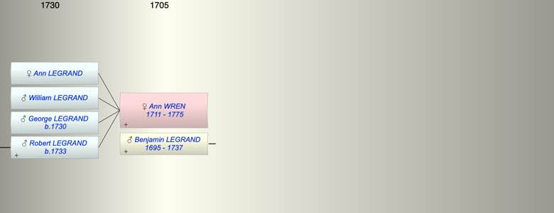

| [Index] |
| Ann WREN (1711 - 1775) |
|  |
| b. 1711 |
| +. Benjamin LEGRAND (1695 - 1737) |
| d. 06 Sep 1775 aged 64 |
| Children (4): |
| Ann LEGRAND |
| William LEGRAND |
| George LEGRAND (1730 - ) |
| Robert LEGRAND (1733 - ) |
| Events in Ann WREN (1711 - 1775)'s life | |||||
| Date | Age | Event | Place | Notes | Src |
| 1711 | Ann WREN was born | Note 1 | |||
| 1730 | 19 | Birth of son George LEGRAND | Canterbury | bap All Saints, Canterbury | |
| 1733 | 22 | Birth of son Robert LEGRAND | Canterbury | Note 2 | |
| Oct 1737 | 26 | Death of husband Benjamin LEGRAND (aged 42) | |||
| 06 Sep 1775 | 64 | Ann WREN died | aged 64 | ||
| Death of daughter Ann LEGRAND | died unmarried | ||||
| Death of son William LEGRAND | Note 3 | ||||
| Note 1: daughter of George Wren, minor Canon of Canterbury |
| Note 2: bap All Saints Canterbury 5 Oct 1733 son of Benjamin and Ann ex FMP PR |
| Note 3: killed at the siege of Londicherry in September 1760 |
| Created on a Mac™ using iFamily for Mac™ on 8 Oct 2023 |